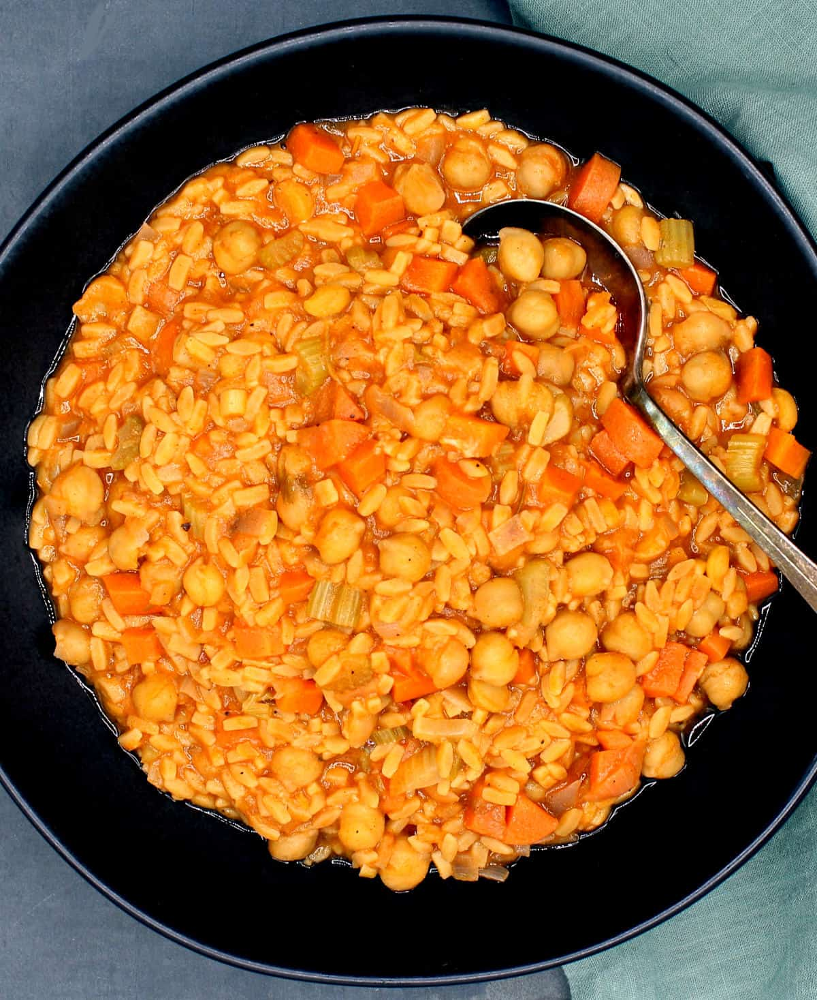

Back to Odin Recipes Homepage
What's for Lunch? Pasta with Chickpeas!

Description
This is a simple Italian dish consisting of chickpeas and short pasta in a slightly brothy, rosemary-scented sauce. The perfect comfort food for cold winter nights.
This cozy and delicious dish is weeknight-friendly and it takes under 30 minutes to make. It also has 33 grams of protein and 24 grams fiber in each hearty serving.
Equipment
- Dutch oven or a large pot
Ingredients
- Extra Virgin Olive Oil, ¼ cup plus some more for drizzling.
- A Medium Onion
- Stalk Celery , 3 stalks finely chopped
- A large Carrot, finely chopped
- Garlic, 4 cloves minced or put through a garlic press
- 2 Bay Leaves
- Dried Rosemary, or fresh and minced, 1 teaspoon
- Dried Oregano, or fresh and minced, 1 teaspoon
- 14 oz canned plum tomatoes
- 1 heaping tbsp tomato paste
- Paprika, or red pepper flakes, 1 tablespoon
- 29 oz canned or cooked chickpeas
- Mushroom Stock, or vegetable stock or water, 4-5 cups
- 12 oz pasta, use any small pasta, such as ditalini, maccheroni, farfalle, conchiglie, rigatoni or penne. I used chickpea pasta, which is higher in protein
- Salt to taste
Steps - How to make it
- Place olive oil in large pot or Dutch oven, add onions, carrots and celery and season with salt and ground black pepper. Turn heat to medium and saute the veggies for a couple of minutes.
- Add the garlic, bay leaves, rosemary and oregano.
- Continue to saute the veggies until they are almost soft, about five minutes. Don't let them brown.
- Stir in the tomato paste and tomato puree and mix, add paprika or red pepper flakes. Mix and bring the sauce to a boil. Lower heat and simmer five minutes.
- Stir in the drained chickpeas, along with four cups mushroom stock (or water). Mix well and bring back to a boil. Add salt to taste.
- Add the pasta and mix it in, bring to a boil and let the pasta simmer in the broth until al dente (it should take about the same time as it would if you cooked the pasta separately). Stir a few times to make sure the pasta doesn't stick to the bottom, and add more water if needed.
- Once the pasta has cooked, turn off the heat, he sauce will continue to thicken as it stands. Serve hot or warm with a drizzle of extra virgin olive oil and some vegan cashew parmesan cheese.
Original recipe by Vaishali can be found at Holy Cow Vegan